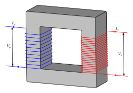

Magnetic flux is defined as \(\Phi = \int \vec{B} \cdot \mathrm{d}\vec{A}\) and is measured in Webers. Faraday's law states that a changing magnetic flux through a conducting loop, induces an emf inside that loop, in particular, $$\mathcal{E} = - N\frac{\mathrm{d}\Phi}{\mathrm{d}t}.$$Lenz's law states that the induced current in the loop has a direction so that the magnetic flux due to the induced current opposes the change in flux that induced the current. That is, a current will flow in a direction to prevent the current flux from changing. The induced current is caused by an induced electric field. $$\mathcal{E} q_0 = W = \oint \vec{F}\cdot \mathrm{d}\vec{s} = q_0\oint \vec{E}\cdot \mathrm{d}\vec{s}.$$ Hence we obtain an equivalent form of Faraday's law: $$-\frac{\mathrm{d}\Phi}{\mathrm{d}t} = \oint \vec{E}\cdot \mathrm{d}\vec{s}.$$ Note: Electric potential only has meaning when \(E\) is produced from static charges (so the lines on \(E\) go from positive to negative); it has no meaning for \(E\) produced by induction (\(E\) lines form loops in this case, so \(\int E \cdot ds = 0\), which implies the emf is 0, yet work is being done to move charges).
Inductance is defined as \(L = \frac{N\Phi}{i}\) and is measured in Henrys.
An induced emf occurs in any coil in which \(i\) changes, including the coil in which \(i\) is changing. We have \(L i = N \Phi\). Taking time derivatives, we have \(\mathcal{E}_{\mathrm{induced}} = L \frac{\mathrm{d}i}{\mathrm{d}t}.\) The induced emf opposes the change in \(i\) in order to try and maintain initial conditions. For an ideal inductor, \(V_L = \mathcal{E}\), but if the inductor has resistance we can treat it as though the resistance were in series so \(V_L = \mathcal{E} \pm iR\), where the choice of sign depends on the direction of the current.
If we attach an inductor to an emf source and a current \(i\) is flowing, then the rate at which the emf device delivers energy to the inductor is the rate at which magnetic potential energy is stored in the magnetic field, i.e. \(\mathcal{E}i = Li \frac{\mathrm{d}i}{\mathrm{d}t} =\frac{\mathrm{d}U_B}{\mathrm{d}t}.\) Hence $$U_B = \frac{1}{2}Li^2.$$
For a solenoid, \(\frac{U_B}{\mathrm{vol}} = \frac{Li^2}{2Al} = \frac{\mu_0 n^2 i^2}{2} = \frac{B^2}{2\mu_0}\) since \(\frac{L}{l} = \mu_0n^2 A\) and \(B = \mu_0i n.\) In general, $$u_B = \frac{B^2}{2\mu_0}.$$
When sending current over a long wire, it is preferred to send it at a high voltage, so current is low and ohmic losses, \(i^2R\), are minimal. The purpose of a transformer is to step-up or step-down the primary voltage. Suppose we apply an AC current, \(\mathcal{E} = \mathcal{E}_m\sin(\omega t)\), to the primary side of the transformer. We neglect resistance in the wires. The sinusoidal current in the primary, induces a sinusoidal magnetic flux in the iron core (the ferromagnetic iron helps redirect the magnetic flux). This fluctuating magnetic flux induces an emf in each turn of the secondary. $$\mathcal{E}_{\mathrm{turn}} = \frac{V_p}{N_p} = \frac{V_s}{N_s},$$hence \(V_s = V_p\left( \frac{N_s}{N_p}\right).\) Note the primary circuit is purely inductive, so the current lags the voltage by \(90^{\circ}\). Thus the power factor is 0, i.e. no power is delivered from the generator to the transformer.  If a load of resistance \(R\) is attached to the secondary, a (alternating) current \(I_s\) flows and dissapates energy at the rate \(I_s^2R.\) \(I_s\) produces and alternating magnetic flux which opposes the changing emf in the primary. However, \(V_p\) in the primary doesn't change since the generator compenates in the driving emf amplitude. To maintain \(V_p\) the generator produces additional current \(I_p\) in the primary. By conservation of energy, \(I_pV_p = I_sV_s,\) so $$I_s = I_p\left(\frac{N_p}{N_s}\right).$$Since \(I_S = \frac{V_s}{R}\), we have $$I_p = \frac{1}{R}\left(\frac{N_s}{N_p}\right)^2 V_p = \frac{V_p}{R_{\mathrm{eq}}},$$where \(R_{\mathrm{eq}} = R\left(\frac{N_p}{N_s}\right)^2\) is the resistance of the load as seen from the generator.